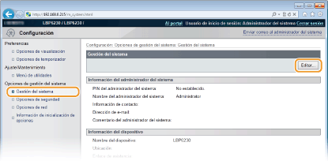
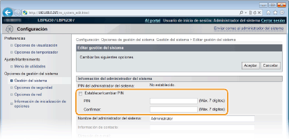
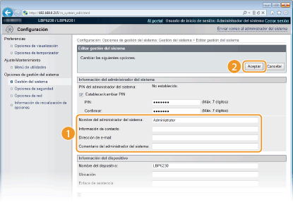

0KXF-02S
Para cambiar la configuración del equipo desde el IU remoto se necesitan derechos de acceso de administrador. Inicie sesión como administrador y siga este procedimiento para establecer el PIN (contraseña del administrador del sistema). La contraseña del administrador del sistema es fundamental para la seguridad del equipo. Asegúrese de que únicamente los administradores del sistema conocen esta contraseña.
1
Inicie el IU remoto e inicie sesión en modo Administrador del Sistema. Inicio del IU remoto
2
Haga clic en [Configuración].

3
Haga clic en [Gestión del sistema]  [Editar].
[Editar].

4
Introduzca el PIN.

[Establecer/cambiar PIN]
Para configurar o cambiar un PIN, seleccione la casilla de verificación e introduzca un número de hasta siete dígitos. Escriba esta misma cifra en los cuadros de texto [PIN] y [Confirmar].
Para configurar o cambiar un PIN, seleccione la casilla de verificación e introduzca un número de hasta siete dígitos. Escriba esta misma cifra en los cuadros de texto [PIN] y [Confirmar].

No podrá registrar números PIN que contengan únicamente ceros, como por ejemplo "00" o "0000000".
Para eliminar la configuración de un PIN, marque la casilla de verificación [Establecer/cambiar PIN] y haga clic en [Aceptar] con los cuadros de texto [PIN] y [Confirmar] vacíos.
5
Introduzca el nombre y la información de contacto del administrador del sistema según corresponda y haga clic en [Aceptar].

[Nombre del administrador del sistema]
Introduzca hasta 32 caracteres alfanuméricos en el nombre del administrador del sistema.
Introduzca hasta 32 caracteres alfanuméricos en el nombre del administrador del sistema.
[Información de contacto]
Introduzca hasta 32 caracteres alfanuméricos en la información de contacto del administrador del sistema.
Introduzca hasta 32 caracteres alfanuméricos en la información de contacto del administrador del sistema.
[Dirección de e-mail]
Introduzca hasta 64 caracteres alfanuméricos en la dirección de e-mail del administrador del sistema.
Introduzca hasta 64 caracteres alfanuméricos en la dirección de e-mail del administrador del sistema.
[Comentario del administrador del sistema]
Introduzca hasta 32 caracteres alfanuméricos en los comentarios sobre el administrador del sistema.
Introduzca hasta 32 caracteres alfanuméricos en los comentarios sobre el administrador del sistema.